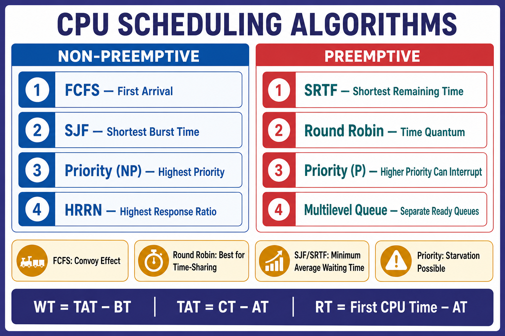

Operating System Scheduling Algorithms
Core timing formulas, algorithm rules, Gantt charts, advantages, disadvantages, and exam comparisons.

Core timing formulas, algorithm rules, Gantt charts, advantages, disadvantages, and exam comparisons.
